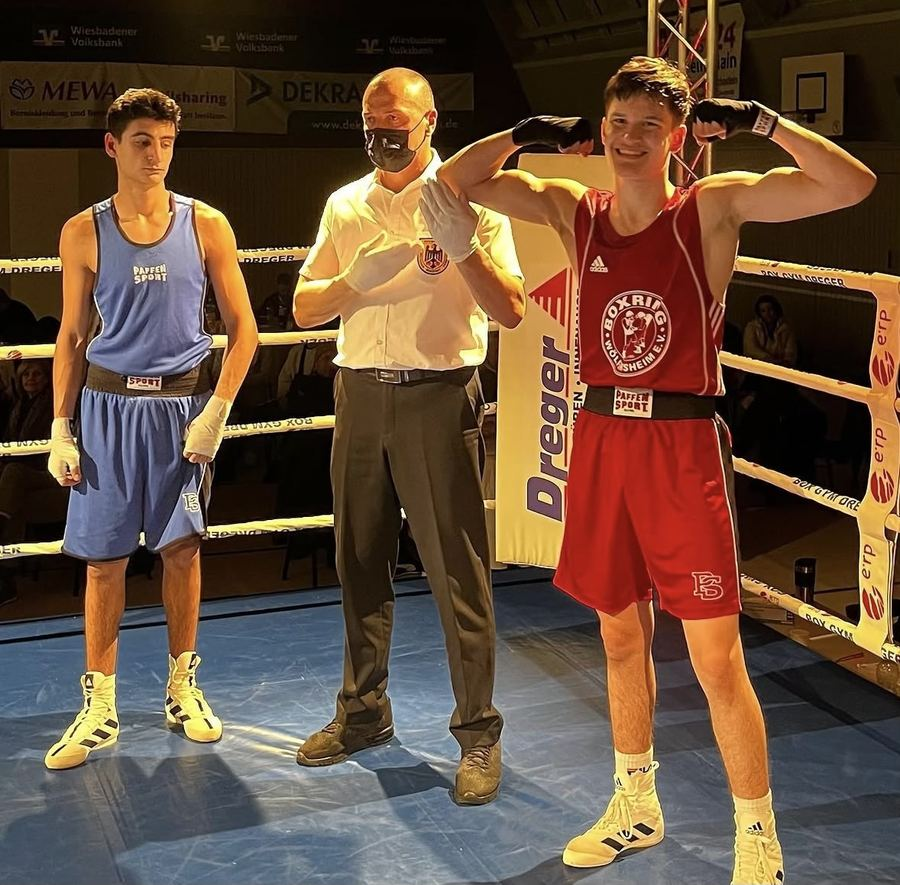

27. Februar 2022 – Duelle der Champions, Wiesbaden
Moskoglo siegt erneut souverän
Bei der Boxveranstaltung "Duelle der Champions" des Golden Boxing Gym in Wiesbaden zeigte Vadim Moskoglo wieder eine herausragende Leistung und siegte eindeutig gegen seinen zwei Jahre älteren Gegner. Von der ersten Sekunde an dominierte er mit druckvollen Händen und präziser Technik, sodass der Gegner bereits in Runde 1 angezählt werden musste. Dieser Taktik blieb er die nächsten zwei Runden treu und siegte eindeutig verdient nach Punkten. Die Vorbereitung auf die U17-Deutsche-Meisterschaft in Wittenberg läuft bereits auf Hochtouren.